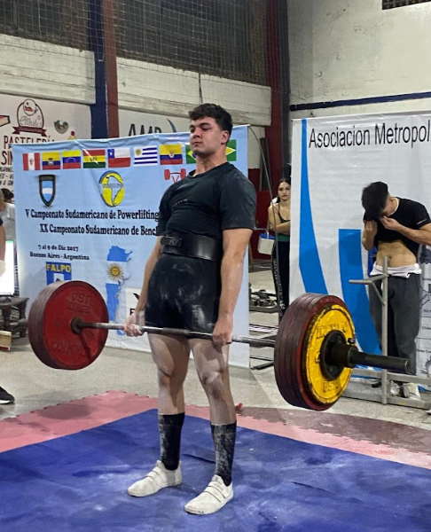

Máximo Maritano
Powerlifting
- Campeón Sudamericano
- Récord Argentino
- Beca en Lenoir-Rhyne University (EE.UU.)
Conectamos atletas con oportunidades en todo el mundo
GOAT Sport Connections es una agencia deportiva que une a atletas con oportunidades educativas y profesionales a nivel internacional.
Conseguirle a cada atleta una beca deportiva que le permita continuar su formación académica mientras desarrolla su potencial deportivo.
Ser la organización líder en el reclutamiento de atletas, creando oportunidades educativas y deportivas en todo el mundo.
El servicio tiene un valor total de USD $2.500 distribuido en dos pagos:
Powerlifting
Tenis
GOAT gestionó mi beca en Lenoir-Rhyne University con un proceso impecable. Mientras yo competía como Campeón Sudamericano, ellos manejaron toda la logística académica.
— Máximo Maritano, Powerlifting (Beca NCAA 2025)
Obtuve mi beca en UT Arlington sin complicaciones gracias a GOAT. Su equipo resolvió todos los trámites mientras yo mantenía mi ranking nacional en tenis.
— Natalia González, Tenis (Beca NCAA 2025)